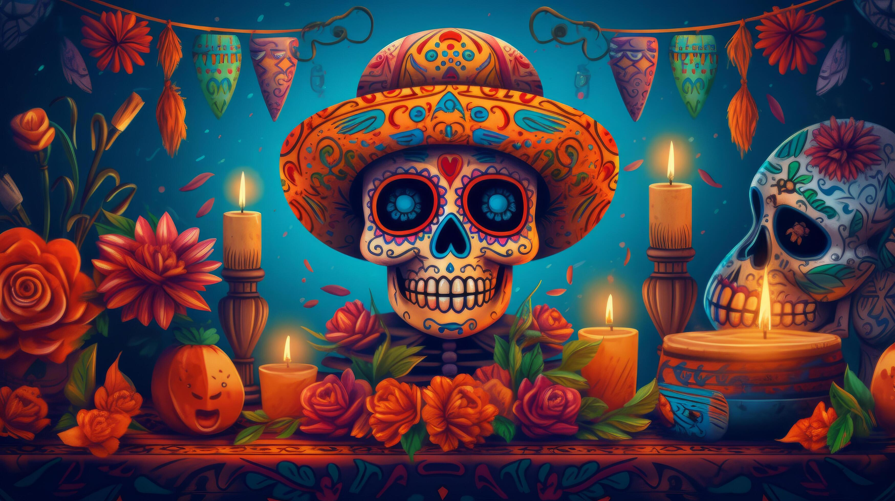
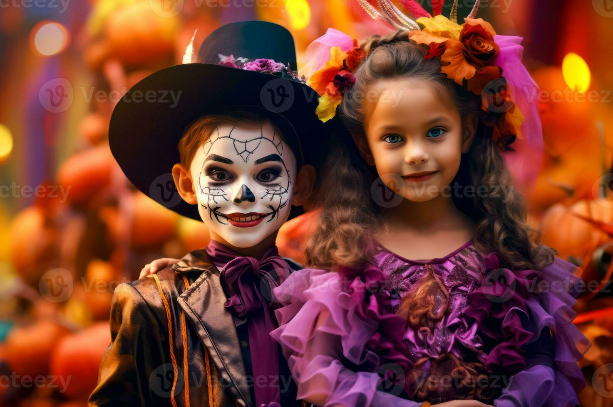
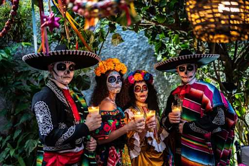
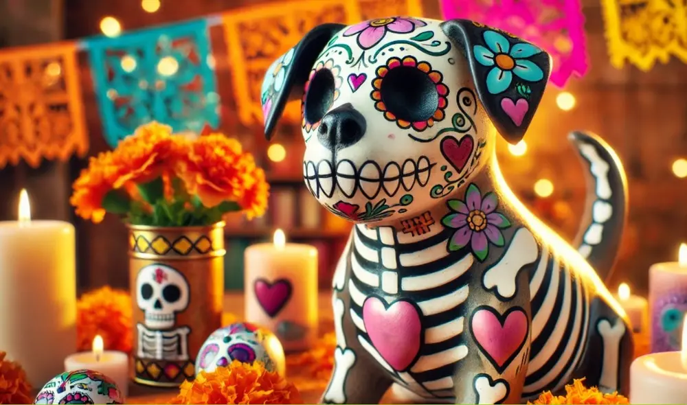

Celebra una de las tradiciones más importantes de México con nuestros disfraces del Día de Muertos. Tenemos opciones para niños, adultos y mascotas, llenas de color, creatividad y tradición mexicana.

Contamos con disfraces infantiles inspirados en la Catrina, el Catrín y las calaveritas mexicanas. Son ideales para festivales escolares, fiestas y celebraciones familiares.
Disfraz de Catrina: $350 MXN
Disfraz de Catrín: $320 MXN
Disfraz de calaverita: $280 MXN
Disfraz de catrina infantil con flores: $400 MXN

Para los adultos ofrecemos opciones inspiradas en la Catrina elegante, el Catrín tradicional y las calaveras mexicanas. Puedes complementar tu disfraz con sombreros, flores y maquillaje.
Disfraz de Catrina: $650 MXN
Disfraz de Catrín: $600 MXN
Disfraz de calavera: $450 MXN
Disfraz tradicional mexicano: $700 MXN

Tenemos disfraces cómodos inspirados en calaveritas, pequeños catrines y motivos de cempasúchil. Elige una talla adecuada para tu mascota.
Disfraz de calaverita: $180 MXN
Disfraz de catrín para mascota: $250 MXN
Disfraz de catrina para mascota: $250 MXN
Accesorio de cempasúchil: $100 MXN
Somos un proyecto dedicado a ofrecer disfraces para celebrar el Día de Muertos, una tradición mexicana que honra la memoria de nuestros seres queridos.
Ofrecer disfraces originales y accesibles para niños, adultos y mascotas, promoviendo el respeto por las tradiciones mexicanas y la convivencia familiar.
Ser una opción reconocida por nuestra variedad de disfraces, la atención a nuestros clientes y la difusión de la cultura del Día de Muertos.
Este proyecto nace de la idea de compartir las tradiciones y la cultura de México a través de los disfraces. Buscamos que cada persona encuentre un atuendo especial para participar en festivales escolares, fiestas y reuniones familiares.
Numero telefonico: 5548904055
Correo electronico: edwin26men@gmail.com
¿Te interesa alguno de nuestros disfraces? Escríbenos para consultar modelos, tallas, precios y disponibilidad.